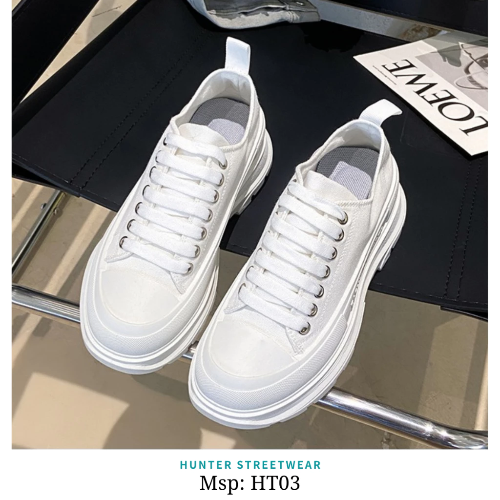

Sneakers Nam-Nữ size 37-44 ĐƠN GIẢN - NĂNG ĐỘNG dễ phối đồ
SKU: SNK-3744
299.000₫
Còn hàng
🚚 Miễn phí giao hàng cho đơn từ 300.000₫ – Giao trong 2 giờ
🎁 Mua 1 tặng 1 dây giày cùng loại
🧴 Mô tả sản phẩm
- Chất liệu: Vải CANVAS cao cấp mềm mại
- Đế giày: Cao su đúc nguyên khối chắc chắn, có rãnh chống trơn trượt
- Màu sắc: Trắng
- Size: 37 – 44
✨ Đặc điểm sản phẩm
Giày dễ phối đồ, thích hợp cho các hoạt động hàng ngày và du lịch. Mũi giày thon tròn, đế cao su tổng hợp, xẻ rãnh giúp thoải mái khi đi. Thích hợp đi 4 mùa, khô thoáng – thoải mái – không gò bó, phù hợp mọi lứa tuổi.
🧼 Cách vệ sinh giày
- Giặt nhẹ bằng khăn ẩm và xà phòng loãng, không dùng bàn chải cứng hoặc chất tẩy mạnh.
- Làm sạch kỹ để tránh ố vàng.
- Phơi giày tự nhiên, không phơi trực tiếp dưới ánh nắng mặt trời.
💯 Cam kết
- Sản phẩm chuẩn 100% như hình.
- Giao hàng trên toàn quốc.
- Cảm ơn quý khách đã ủng hộ SixMart!